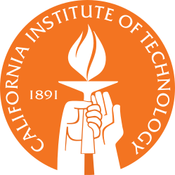
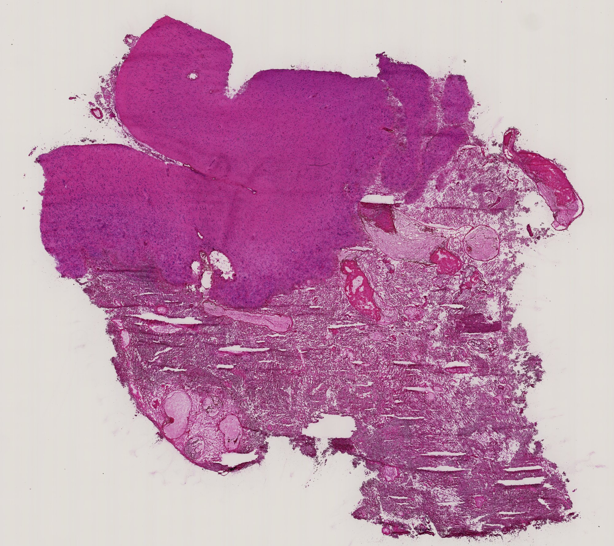
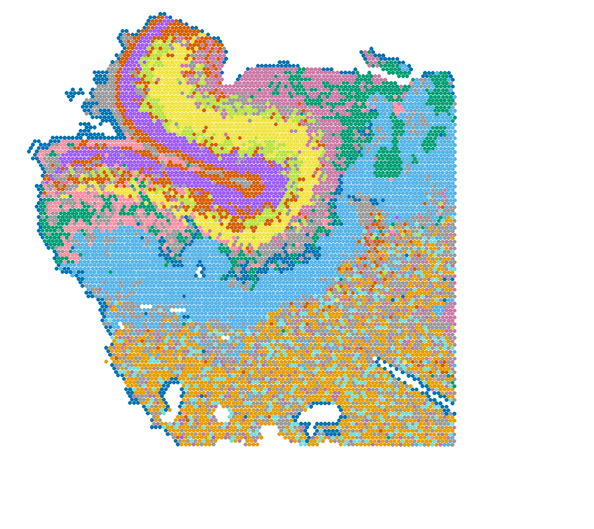
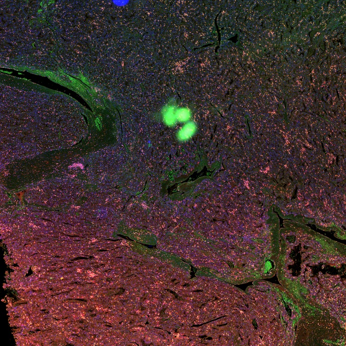
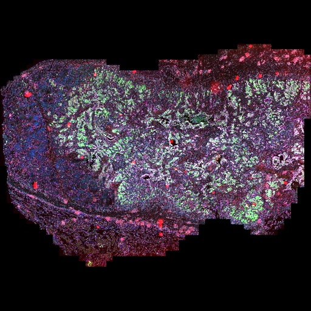
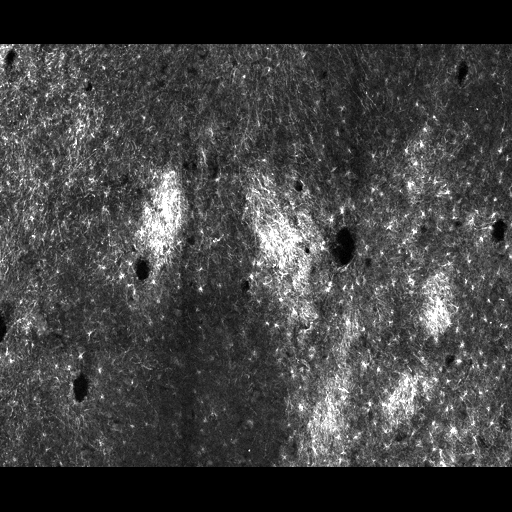

Co-founder & CSO
Logan Beharry
Previously A2 BiotherapeuticsCAR-T process development
A2 BiotherapeuticsCAR-T process development PfizerMedical Affairs
PfizerMedical Affairs
Education
Caltech USC
USC
computational biology, accelerated.
Every core service your lab needs.
One AI-powered team.
Spatial, single-cell and genomics analysis for labs without a bioinformatics core.
Background: 3D UMAP of 120,000 cells from the Allen Brain Cell Atlas MERFISH mouse brain (Yao et al., Nature 2023), computed by Artemis; cells drift to their positions in the brain and back.
Artemis Biolabs is funded by Bill Gross. About our backing
Where our team has trained and collaborated




ABOUT ARTEMIS
Co-founder & CSO
Education

Co-founder & COO
Education
Where we met, in Pasadena.
 Artemis BioLabs
Artemis BioLabsWe build tools to explore biological data.
DAPI and Nissl fluorescence, false color. Qian Zhu · CC BY 4.0
LIVE DEMO / GBM3
Move over the tissue or switch to + Spots.
Open AT15 portalThe analysis isn’t a PDF you receive — it’s an instrument you hold. Below, 1,775 spots from a public GBM section breathe between the tissue they were cut from and the embedding that organizes them.
loading embedding…
Fig. 4 | A living figure: the same 1,775 spots glide between tissue coordinates and four UMAP parameterizations computed offline from one shared neighbors graph (fixed seed) — cell-type labels ride their clusters through the fold. One UMAP is a choice, not a fact; here you hold the dials. GBM3, Ren et al. 2023 (GSE194329); every view computed, none curated.
LIVE VIEWER · IN THE BROWSER
This is Artemis Explore running on a public glioblastoma section. Drag and scroll to move around the histology, blend in marker channels, and switch the mapped cell states on and off.


H&EOpen the live viewer works best on a laptop or tabletLive viewer | AT15, a Visium glioblastoma section from de Jong et al., Nature 2026 (gbmspace.org): 10,356 spots, eight expression-derived marker channels, and 66 cell states estimated with cell2location.
Explore a gene linked to lung squamous cancer. Start at SOX2 on chromosome 3, then pan or zoom into either track.
SOX2 is a transcription factor that helps control gene activity. Its DNA is often amplified in lung squamous cancer.
Bass et al.CUT&RUN maps where SOX2 binds DNA in the NCI-H520 lung cancer cell line.
GEO recordPacBio HiFi reads from GIAB HG002 show individual DNA reads at the same locus, from a different sample.
Genome in a Bottlestreaming reference + tracks from igv.org · GEO · GIAB…
Fig. 3 | Genome browser at the SOX2 locus (GRCh38). Top: SOX2 CUT&RUN coverage in the NCI-H520 lung cancer cell line (GEO GSM8782600). Bottom: PacBio HiFi read alignments from the separate GIAB HG002 reference sample. The tracks show different experiments at the same locus; this comparison does not establish how SOX2 regulates its own expression.
CORE CAPABILITIES
The glioblastoma run above is one of them. The others work the same way: a real pipeline, a portal you can open, and a report you can hand a reviewer.
Single-cell
Raw reads to annotated atlases, including iPSC benchmarking.
Spatial transcriptomics
Every cell or spot mapped back onto the tissue.
CUT&Tag and chromatin
Peaks, tracks and differential binding.
Long-read sequencing
Isoforms, structural variants and methylation.
Radiomics and imaging
From segmentation to outcome models.
Calcium imaging
Wave detection without hand scoring.
Clinical data and biostatistics
Cohorts, trials and survival models.
Custom apps: DNA Studio
Plasmid maps from SnapGene files.
Demos for the other cores are available on request. We also handle bulk RNA-seq, variants, proteomics, metabolomics, cytometry and microbiome. Request a sample report
PUBLIC MULTIPLEXED TISSUE · BIOIMAGE ARCHIVE

ccRCC · Hoechst / MCM2 / CD3 / CD8 — composited from the study's OME-zarrBioImage Archive S-BIAD605 · Wölflein et al. · CC0
Lung adenocarcinoma · multiplex IF whole-slide imageBioImage Archive S-BIAD1237 · Um et al. · CC BY 4.0
Human thalamus · neuronal, vascular and glial markersBioImage Archive S-BIAD1641 · John et al. · CC BY 4.0PR Lead and Chief of Compliance
Legal studies · University of Toronto

Intern
UCLA
Essays on bioinformatics, multi-omics, and the software biology deserves. New pieces land here automatically as we publish.
If your lab is sitting on spatial data and short on computational hands, send us a public or in-house dataset and we'll turn it around as a live portal.
For labs
Tell us your data type and question; we reply with a proposed first analysis.
Request early accessFor collaborators
A dataset, a method or a joint project. Propose it and we come back with a plan.
Suggest a collaborationTalk first
Walk us through the project and the data; leave with a concrete next step.
Book a callOr email lbeharry@alumni.caltech.edu